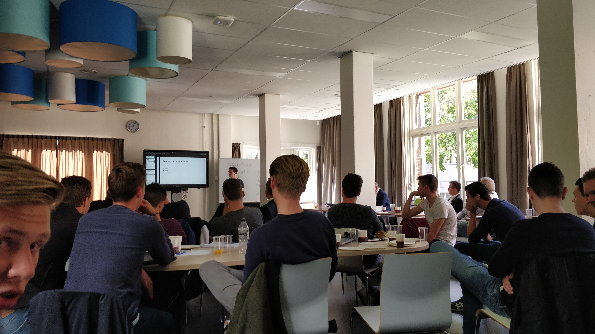
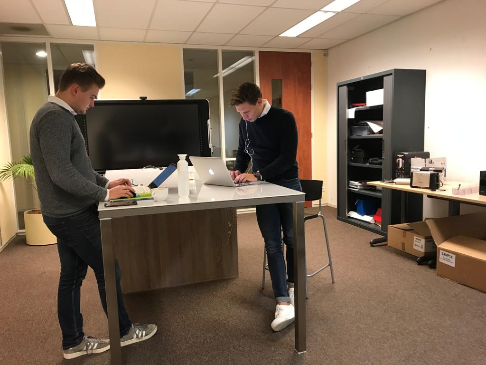
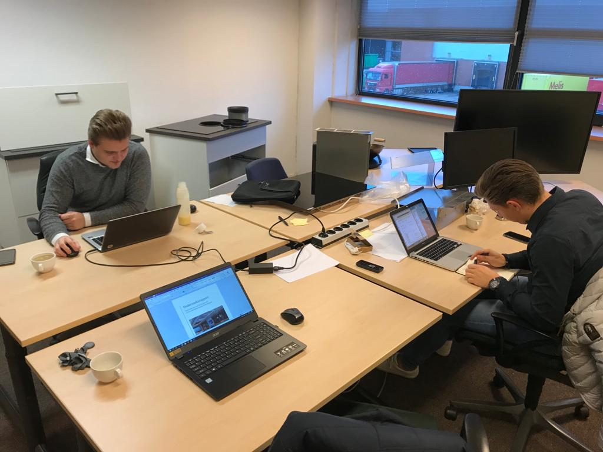
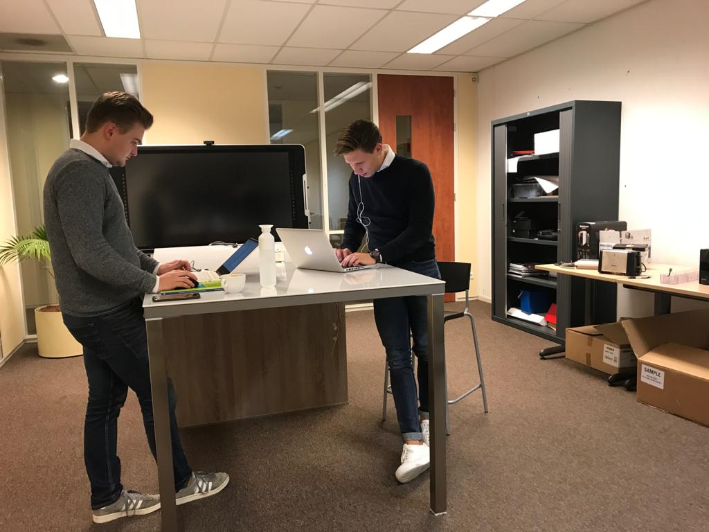
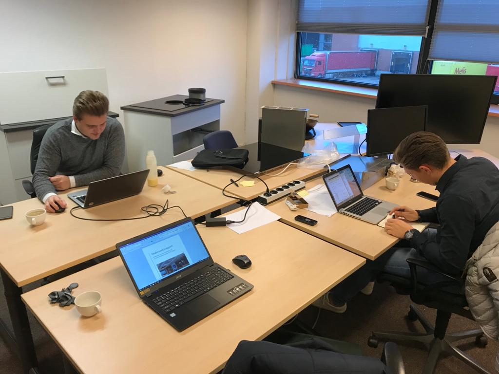

In dit tabblad wordt de voortgang beschreven van het project bij ATAG.
Op woensdag 18 september hebben op de HAN verschillende bedrijven hun projecten/opdrachten gepitcht voor ons. Hierbij hebben een stuk of 8 bedrijven hun ideëen gepitcht en zijn de overige opdracht in een presentatie door Witek besproken.
Wij (Coen Goossens, Diquan Brugman en ik) hebben uiteindelijk gekozen voor ATAG Benelux. Dit leek ons een interessante opdracht die goed aansluit op ons werkgebied, namelijk Technische Bedrijfskunde.

Prezi ATAG Benelux en ICR3ATE
Voorafgaand aan het project hebben we op donderdag 10 oktober 2019 een studentendag gehad bij ATAG Benelux in Duiven. Deze dag is door ATAG zelf georganiseerd om studenten een kijkje in de keuken te geven bij hun bedrijf.
De dag begon met een kop koffie en een presentatie over ATAG om een indruk te geven bij welk bedrijf we waren. Vervolgens hebben we een rondleiding gekregen in de verschillende showrooms van Etna, Pelgrim en ATAG. Daarna zijn we langs het magazijn geweest en tot slot de afdeling R&D. Deze rondleiding gaf ons al een mooie indruk over ATAG en hoe het bedrijf er precies uit ziet.
Aansluitend op de studentendag hebben wij een eerste afspraak gehad met Jan van Os om de eerste zaken over de opdracht te bespreken. Tijdens dit gesprek is de opdracht nog eens nader toegelicht door Jan en hebben we praktische zaken, zoals aanwezigheid, besproken. We hebben toen met Jan afgesproken dat wij één dag in de week bij ATAG aanwezig zouden zijn. Mochten we vaker aanwezig willen zijn was dat natuurlijk geen probleem, mits dit even gecommuniceerd werd.

ATAG Benelux is een keukenleverancier voor B2B klanten. ATAG is verplicht om na introductie van een bepaald product 10 jaar lang de beschikbaarheid van serviceonderdelen te garanderen. Dit heeft geresulteerd in grote voorraden serviceonderdelen in Duiven. Uit historische data is verder gebleken dat de behoefte op de verschillende serviceonderdelen erg fluctueert. Door de variatie in behoefte en de grote hoeveelheden voorraden die hieraan ten grondslag liggen, loopt ATAG Benelux dagelijks tegen meerdere problemen aan. Ten eerste heeft de huidige wijze van voorraadbeheer van serviceonderdelen een grote impact op de flexibiliteit, klanttevredenheid en integrale kosten van de organisatie. Daarnaast doelt het overkoepelende Chinese concern Hisense op voorraadminimalisatie bij ATAG Benelux. Dit in combinatie met het inefficiënte wijze van voorraadbeheer is ATAG gaan kijken naar de mogelijkheden van de technologie 3D-printen.
De opdracht voor de Minor is om uiteindelijk een product op te leveren. Wij hebben in samenspraak met ATAG gekozen om een Onderzoeksrapport te maken waarin wij de volgende hoofdvraag beantwoorden:
“Wat zijn de mogelijkheden van het 3D-printen van serviceonderdelen en welke stappen moeten er genomen worden door ATAG Benelux om 3D-printen van onderdelen mogelijk te maken?”
Uiteindelijk hebben wij alles gedocumenteerd in een onderzoeksrapport, die te vinden is in deze link: Project . In het onderzoeksrapport staat alles rondom het project; Bedrijfsbeschrijving, aanleiding, doelstelling, hoofdvragen en de uiteindelijke resultaten. Graag verwijs ik naar het rapport voor al deze onderdelen.
Om toch iets tastbaars te hebben voor het seminar hebben wij in samenwerking met verschillende partners er voor gezorgd dat een bestaand servicecomponent, in dit geval het filter van een vaatwasser, gescand en geprint kon worden. Hiervoor is het filter eerst bij GeoPoints geweest die er een scan van heeft gemaakt. Vervolgens is het STL-file naar Oceanz gestuurd die er een proffessionele print van hebben gemaakt. Hiernaast hebben wij het filter ook laten printen in de modelshop van ATAG zelf. Deze is geprint met een ultimaker en voor veel mensen herkenbaar. Om deze herkenbaarheid hebben wij het filter ook geprint, zodat mensen die nog niet zo bekend zijn met de mogelijkheden van 3D-printen, ook kunnen zien wat de verschillen zijn.
Hieronder het origineel (links), het geprinte filter uit de modelshop (rechts) en van Oceanz (onder).


Tijdens het project heb ik samengewerkt met Coen Goossens en Diquan Brugman. Coen en Diquan hebben net als ik een achtergrond in Technische Bedrijfskunde. Om deze reden verliep de samenwerking vaak goed, gezien we over veel dingen op één lijn zitten.
Ieder teamlid nam zijn eigen rol op zich. Op deze manier kon ieder lekker zijn ding doen en werken aan het rapport. Daarnaast werd er altijd goed gecommuniceerd met elkaar waardoor iedereen over alles op de hoogte was. Iedere week hadden we een planning waar ieder zich aan hield. Mocht iets niet lukken of dingen onduidelijk zijn, waren wij allemaal bereid om mee te denken en naar een passende oplossing te zoeken.
Er zijn natuurlijk ook wel momenten geweest dat we het niet met elkaar eens zijn. Mocht dat het geval zijn, hebben we de tijd genomen om elkaar alles goed uit te leggen. Er werd altijd de tijd en ruimte gegeven om naar elkaar te luisteren. Op deze manier hebben we ook veel van elkaar geleerd, op persoonlijk vlak (zoals medeleven tonen) en proffessioneel vlak (onderwerpen met betrekking tot 3D-printing).
Over het algemeen vond ik het een erg prettige en leerzame samenwerking. De sfeer was goed, we waren bereid de tijd voor elkaar te nemen en hebben veel van elkaar geleerd.
 `

`

Bij ATAG waren wij één (soms twee) dag(en) aanwezig om aan het project te werken. Jan reserveerde dan voor ons een ruimte waar wij de gehele dag konden werken. Hiernaast zijn wij meerdere malen in Winterswijk bij mij aan de slag gegaan met het project. Gezien wij alle drie in de Achterhoek wonen, scheelde dit veel reistijd.
Hiernaast zijn wij nog een aantal keer op excursie naar verschillende bedrijven geweest. Coen en Diquan zijn naar K3D geweest om meer informatie te verkrijgen over 3D-metaalprinten. Ik kon helaas niet aanwezig zijn door een herkansing Duits (Die gelukkig gehaald is!). Verder zijn we nog naar Geopoints geweest om de mogelijkheden te bespreken met betrekking tot 3D-scannen, omdat we graag iets tastbaars wilden voor het seminar. Tijdens dit gesprek ben ik veel te weten te komen over de mogelijkheden van het inscannen van objecten.
Tot slot zijn wij met z'n drieën nog naar een informatieavond geweest bij Kaak in Terborg. Deze infoavond was gericht op het 3D-Metaalprinten. Aangezien ik niet bij de eerste meeting kon zijn ben ik blij dat ik naar deze avond ben geweest, om zo ook meer kennis op te doen over 3D-metaalprinten.
Tijdens het project hebben we gebruik gemaakt van verschillende communicatiemiddelen.
Om inzicht te krijgen in alle bestanden hebben we gebruik gemaakt van Google Drive. Deze online cloudservice is een handige tool om alle bestanden voor iedereen tegelijkertijd beschikbaar te stellen.
Voor de communicatie met Jan werd met name gebruik gemaakt van Microsoft Teams. Hier konden wij met de chat-functie eventuele afspraken maken en bestanden naar elkaar toe sturen om de progressie te delen. Ook hebben wij gebruik gemaakt van e-mail om zo contacten te leggen met verschillende bedrijven (K3D, Oceanz en GeoPoints) en te communiceren met verschillende medewerkers en afdelingen binnen ATAG.
Tot slot hebben Coen, Diquan en ik gebruik gemaakt van een Whatsapp-groep om zo afspraken met elkaar te maken.
Over het algemeen ben ik erg tevreden met de samenwerking tussen ons drieën. Ik heb veel van de jongens (en over mijzelf) geleerd en mede daardoor is het project, naar mijn mening, een succes geworden. Ook was de begeleiding van Jan van Os erg prettig. Als wij iets van ATAG of van hem nodig hadden stond hij direct klaar om het te regelen. Afspraken, documenten en de vrijhijd en vertrouwen om ons zelfstandig aan het project te laten werken. Ook dit heeft in positieve zin invloed gehad op het resultaat van het project.